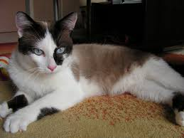

-
Hermanos
Esta camada de gatitos estará disponible para adopcion en dos meses. Se entregan vacunados y desparasitados.
-
Trillizos
Hugo, Paco y Mia son dos hermosos gatitos y una linda gatita que esperan encontrar hogares cariñosos y responsables.
-

Tomy
Tomy es un gato de 10 meses al que le gusta que lo mimen y lo apapachen. Busca un humano que cumpla sus deseos.
-
Katina
Esta gatita consentida y juguetona de 3 meses busca un hogar cariñoso. Se entrega vacunada y desparasitada.
-
Zeus
Zeus tiene un año y quiere saciar su curiosidad en un hogar responsable.Se entrega vacunado y desparasitado.
-
Jazz
Esta preciosa gatita quiere encontrar un amigo de travesuras.Se entrega vacunada y desparasitada.